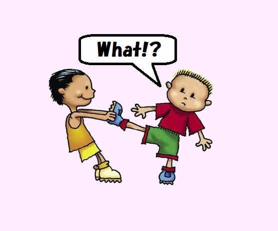

10 English idioms that everyone should know
Idioms. Native English speakers love using them in conversation, and you'll often find them popping up in books, TV shows and movies too. To perfect your English, you really need to become confident in using idioms and knowing the difference between breaking a leg and pulling someone's leg.
Here are 10 English idioms that everyone should know:
- Under the weather
- The ball is in your court
- Spill the beans
 Break a leg
Break a leg-  Pull someone's leg
- Sat on the fence
- Through thick and thin
- Once in a blue moon
- It's the best thing since sliced bread
- Take it with a pinch of salt
1 What does it mean? To feel ill
How do you use it? In England we love to talk about the weather and will do so often, but don't be fooled by this common phrase. If someone says they're feeling under the weather, your response should be 'I hope you feel better!'', not 'Would you like to borrow my umbrella?''.
2 What does it mean? It's up to you
How do you use it? It's your move now, but this idiom refers to life rather than a sport. If you've got the 'ball,'' the decision is yours and someone is waiting for your decision.
3 What does it mean? To give away a secret
How do you use it? If you told someone about their own surprise party, you'd have 'spilled the beans' or even 'let the cat out of the bag'. The secret is out.
4 What does it mean? To wish someone luck
How do you use it? This idiom is not at all threatening. Often accompanied by a thumbs up, 'Break a leg! 'is an encouraging cheer of good luck. It originates from when successful theater performers would to bow so many times after a show that they would break a leg.
5 What does it mean? To play a practical joke
How do you use it? This is the perfect phrase to learn if you're a fan of practical jokes. 'Pull their leg' is similar to 'wind someone up'. Use it in context: 'Relax, I'm just pulling your leg!'' or 'Wait, are you pulling my leg?''.
6 What does it mean? To be undecided
How do you use it? If you're sat on the fence, you've not decided which side of an argument you agree with. 'I'm on the fence about hot yoga classes,'' translates as 'I'm not sure whether I enjoy yoga in a sauna yet.'
7 What does it mean? To be loyal no matter what
How do you use it? Often used to describe families or BFFs, 'through thick and thin' means that you're by each other's side no matter what happens, through the bad times, as well as the good.
8 What does it mean? Rarely
How do you use it? This charming phrase is used to describe something that doesn't happen often. Example: 'I remember to call my parents from my study abroad trip once in a blue moon.'
9 What does it mean? It's really, really good
How do you use it? Sliced bread must have revolutionised life in England because it's since been used as the ultimate benchmark for things that are great. We love it almost as much as tea.
10 What does it mean? Don't take it too seriously
How do you use it? 'I heard that elephants can fly now, but Sam often makes up stories so I take everything he says with a pinch of salt.'